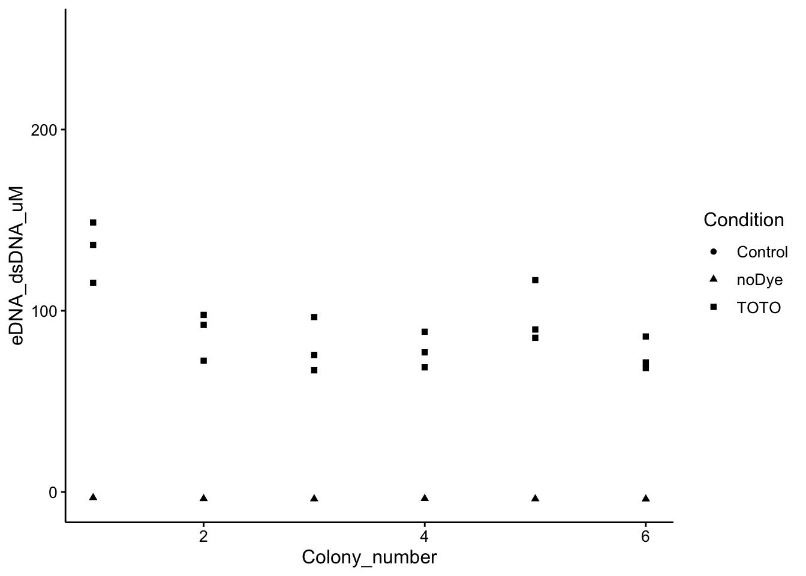
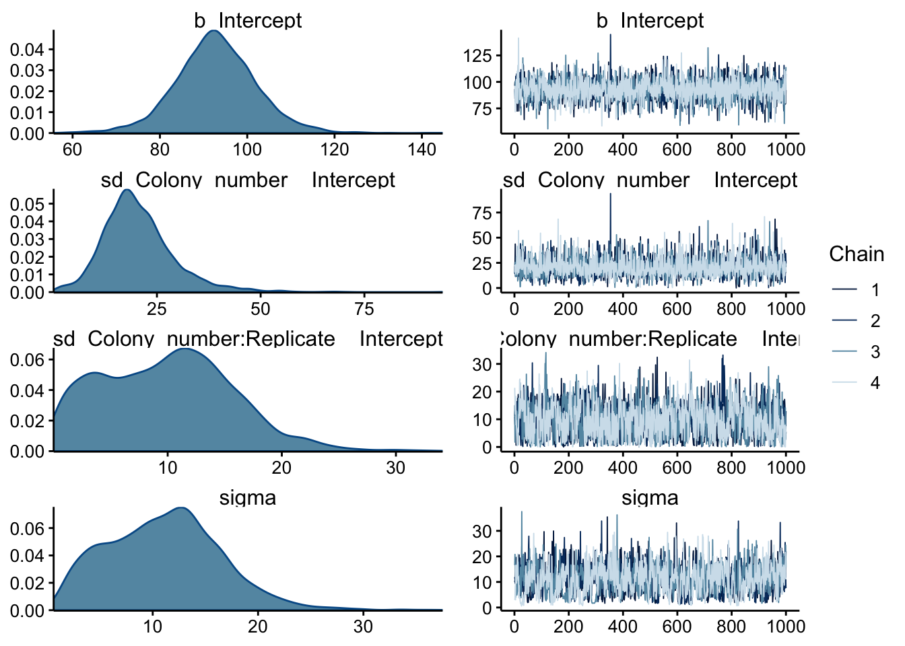
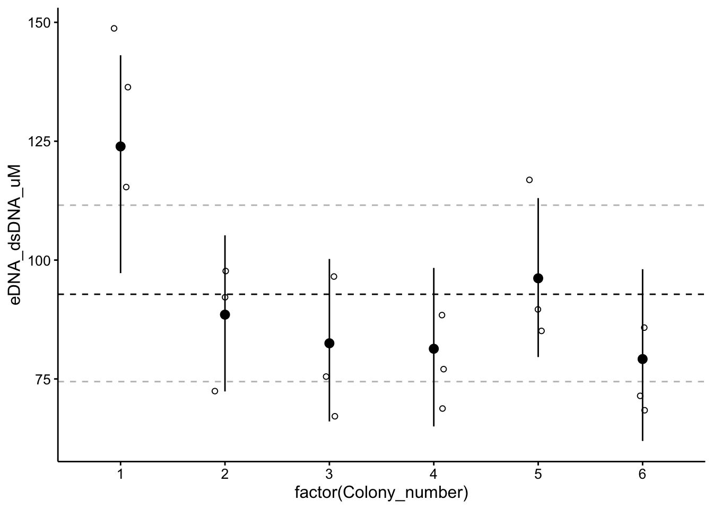
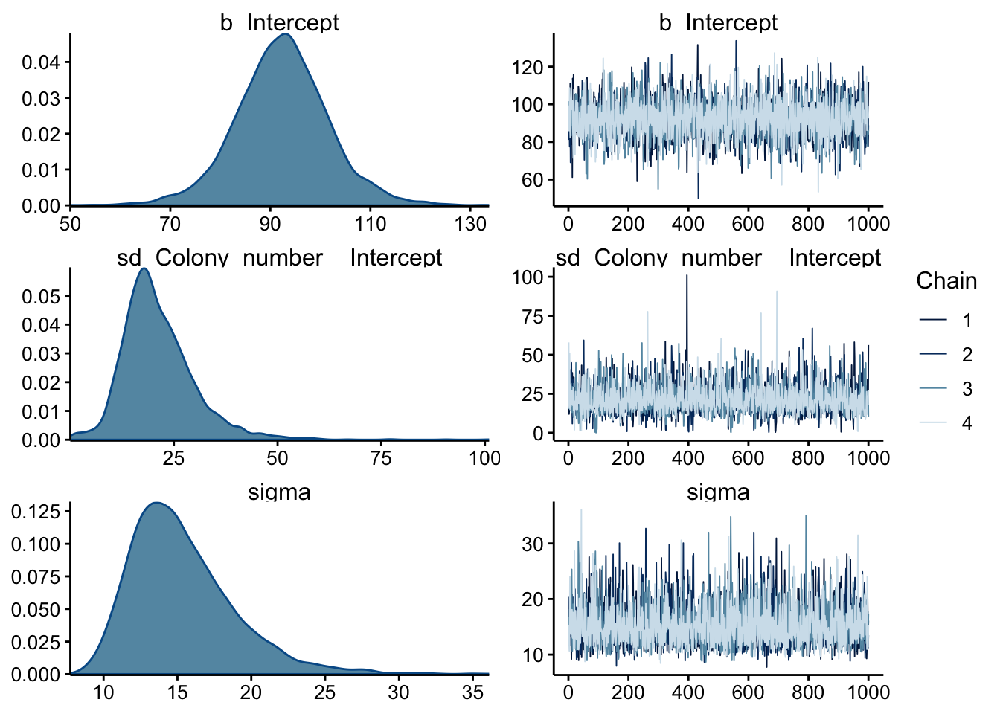
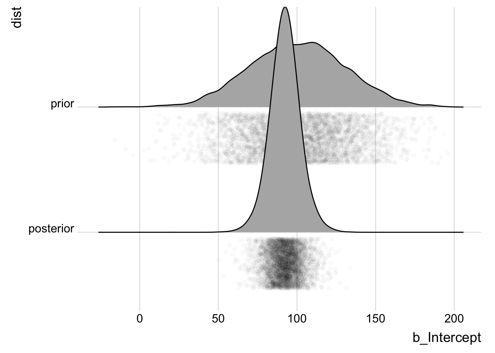
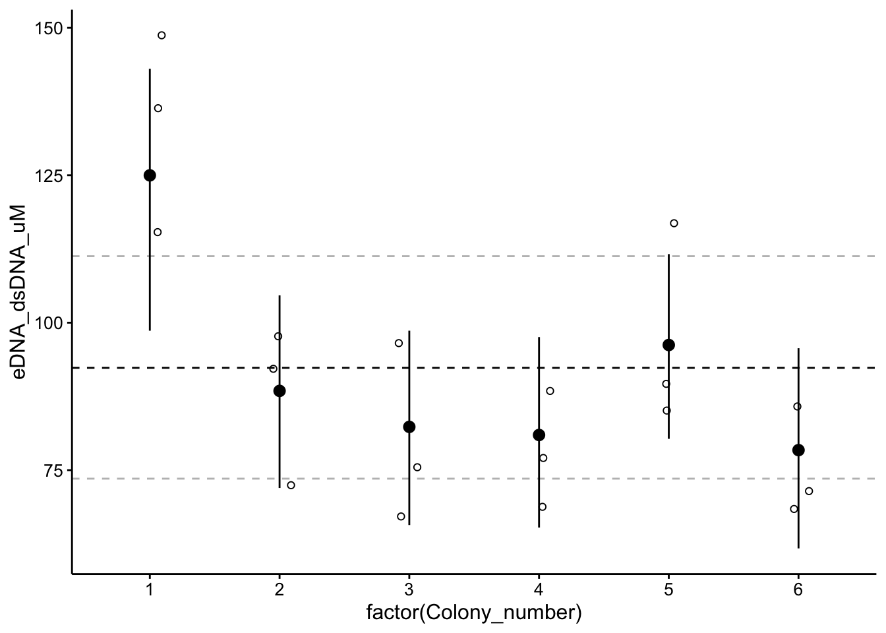
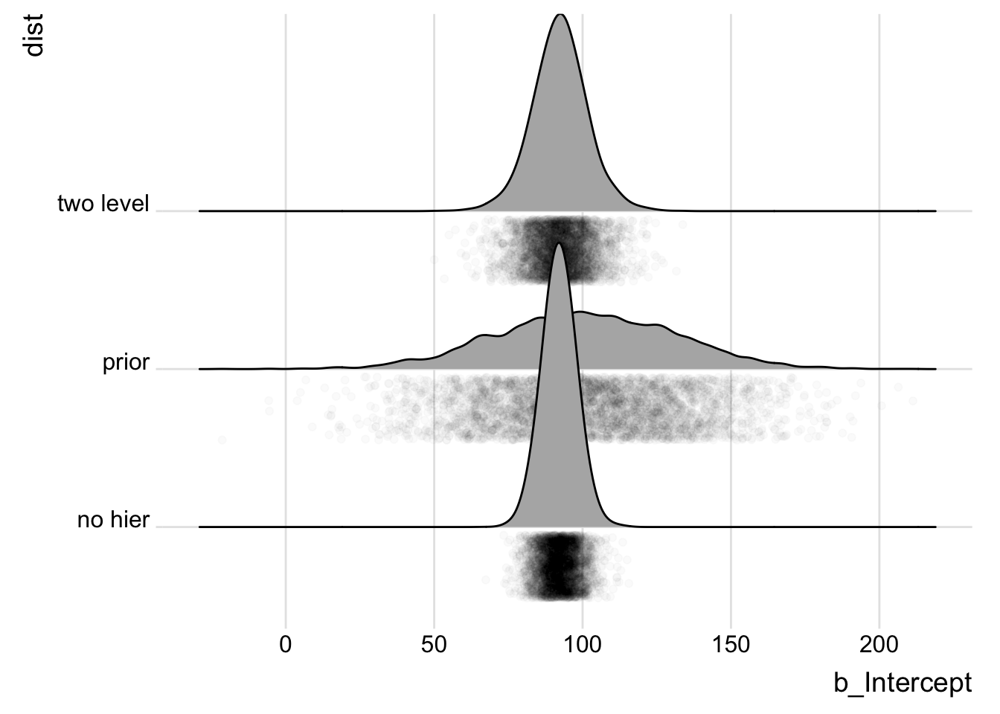
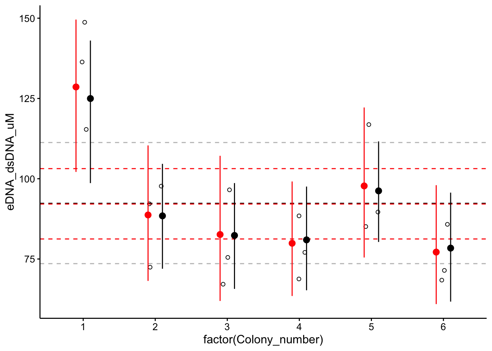

library(tidyverse)
library(cowplot)
library(broom)
library(modelr)
library(viridis)
library(lubridate)
library(hms)
library(knitr)
library(kableExtra)
library(ggridges)
library(brms)
library(tidybayes)
library(mice)
knitr::opts_chunk$set(tidy.opts=list(width.cutoff=60),tidy=TRUE, echo = TRUE, message=FALSE, warning=FALSE, fig.align="center")
source("../../../../IDA/tools/plotting_tools.R")
theme_set(theme_1())This notebook performs bayesian parameter estimation using brms on data that I acquired and processed in this notebook. Essentially I quantified extracellular DNA in WT P. aeruginosa colony biofilms using the dye TOTO-1. I measured the fluorescence in replicate suspensions of replicate colonies and then calculated DNA content with a calibration curve of TOTO with calf thymus DNA (in vitro).
This dataset is inherently hierarchical because we have one hyperparameter that we are interested in - the eDNA concentration in WT colony biofilms, with 6 biological replicates (separate colony biofilms), and each biological replicate was measured in technical triplicate. It is quite reasonable to think that variability occurs at each level, because the biofilm suspension is not very homogeneous (so each technical replicate probably varies), and naturally there’s biological variability as well.
Let’s first take a look at the dataset:
wt_preds <- read_csv("07_23_19_wt_TOTO_calCurve_estimates.csv")
wt_preds %>% kable() %>% kable_styling(bootstrap_options = "condensed") %>%
scroll_box(width = "100%", height = "400px")| Wavelength | Well | FluorInt | Condition | Colony_number | Replicate | pred | eDNA_ug_mL | eDNA_dsDNA_uM |
|---|---|---|---|---|---|---|---|---|
| 535 | A2 | 22868 | Control | NA | NA | 1.5861354 | 84.593889 | 253.781666 |
| 535 | D1 | 217 | noDye | 1 | 1 | -0.0197467 | -1.053155 | -3.159467 |
| 535 | D2 | 168 | noDye | 2 | 1 | -0.0232206 | -1.238432 | -3.715297 |
| 535 | D3 | 157 | noDye | 3 | 1 | -0.0240005 | -1.280025 | -3.840075 |
| 535 | D4 | 173 | noDye | 4 | 1 | -0.0228661 | -1.219526 | -3.658580 |
| 535 | D5 | 159 | noDye | 5 | 1 | -0.0238587 | -1.272463 | -3.817388 |
| 535 | D6 | 152 | noDye | 6 | 1 | -0.0243550 | -1.298931 | -3.896793 |
| 535 | E1 | 10665 | TOTO | 1 | 1 | 0.7209825 | 38.452399 | 115.357197 |
| 535 | E2 | 9108 | TOTO | 2 | 1 | 0.6105963 | 32.565134 | 97.695401 |
| 535 | E3 | 6415 | TOTO | 3 | 1 | 0.4196713 | 22.382471 | 67.147414 |
| 535 | E4 | 7289 | TOTO | 4 | 1 | 0.4816351 | 25.687205 | 77.061614 |
| 535 | E5 | 10798 | TOTO | 5 | 1 | 0.7304118 | 38.955293 | 116.865880 |
| 535 | E6 | 6794 | TOTO | 6 | 1 | 0.4465412 | 23.815531 | 71.446592 |
| 535 | F1 | 12517 | TOTO | 1 | 2 | 0.8522832 | 45.455107 | 136.365320 |
| 535 | F2 | 6882 | TOTO | 2 | 2 | 0.4527801 | 24.148273 | 72.444818 |
| 535 | F3 | 9006 | TOTO | 3 | 2 | 0.6033648 | 32.179456 | 96.538366 |
| 535 | F4 | 6559 | TOTO | 4 | 2 | 0.4298805 | 22.926958 | 68.780874 |
| 535 | F5 | 8397 | TOTO | 5 | 2 | 0.5601887 | 29.876729 | 89.630188 |
| 535 | F6 | 6527 | TOTO | 6 | 2 | 0.4276118 | 22.805961 | 68.417883 |
| 535 | G1 | 13607 | TOTO | 1 | 3 | 0.9295607 | 49.576571 | 148.729711 |
| 535 | G2 | 8622 | TOTO | 2 | 3 | 0.5761404 | 30.727490 | 92.182471 |
| 535 | G3 | 7151 | TOTO | 3 | 3 | 0.4718513 | 25.165405 | 75.496214 |
| 535 | G4 | 8291 | TOTO | 4 | 3 | 0.5526736 | 29.475926 | 88.427779 |
| 535 | G5 | 7998 | TOTO | 5 | 3 | 0.5319009 | 28.368047 | 85.104140 |
| 535 | G6 | 8059 | TOTO | 6 | 3 | 0.5362256 | 28.598697 | 85.796092 |
So you can see that we have the raw data from the wells (from the platereader), as well as a prediction of the well concentration, and biofilm concentration in uM (eDNA_dsDNA_uM). Look back at the other notebook to see how this was done. Anyway, what we have is a dataset that looks like this:
ggplot(wt_preds, aes(x = Colony_number, y = eDNA_dsDNA_uM, shape = Condition)) +
geom_point()
You can see that the wells incubated with dye show an obvious signal. There is heterogeneity among the different colonies (biological replicates), and the technical replicates. Let’s see if we can use some hierarchical models to accurately calculate an estimate for the eDNA content of the “hyper-colony”!
Ok, so for this first model I wrote out the following in brms syntax: eDNA_dsDNA_uM ~ 1 + (1 | Colony_number / Replicate)
You’ll see as we work through the other models, but briefly this means estimate the intercept (e.g. the value) for this eDNA variable (eDNA_dsDNA_uM ~ 1), but group this intercept into a two level hierarchy with colony and then replicate (+ (1 | Colony_number / Replicate)). You can see that we only have to set the prior for the intercept hyperparameter \(\text{Normal}(100, 30)\). This model takes a while to run, but we’ll cache the results in a file. With multiple levels of hierarchy it can also be hard to estimate, so I’ve ramped up the iterations to 10,000 and adapt delta to 0.95.
wt_brm <- brm(eDNA_dsDNA_uM ~ 1 + (1 | Colony_number/Replicate),
data = wt_preds %>% filter(Condition == "TOTO"), prior = prior(normal(100,
30), class = Intercept), sample_prior = T, chains = 4,
cores = 2, iter = 10000, control = list(adapt_delta = 0.95),
thin = 5, inits = "random", file = "wt_brm_model_3")
summary(wt_brm)## Family: gaussian
## Links: mu = identity; sigma = identity
## Formula: eDNA_dsDNA_uM ~ 1 + (1 | Colony_number/Replicate)
## Data: wt_preds %>% filter(Condition == "TOTO") (Number of observations: 18)
## Samples: 4 chains, each with iter = 10000; warmup = 5000; thin = 5;
## total post-warmup samples = 4000
##
## Group-Level Effects:
## ~Colony_number (Number of levels: 6)
## Estimate Est.Error l-95% CI u-95% CI Eff.Sample Rhat
## sd(Intercept) 20.49 8.68 6.45 41.55 3378 1.00
##
## ~Colony_number:Replicate (Number of levels: 18)
## Estimate Est.Error l-95% CI u-95% CI Eff.Sample Rhat
## sd(Intercept) 9.89 5.74 0.53 21.82 1339 1.00
##
## Population-Level Effects:
## Estimate Est.Error l-95% CI u-95% CI Eff.Sample Rhat
## Intercept 92.81 9.21 74.44 111.55 3680 1.00
##
## Family Specific Parameters:
## Estimate Est.Error l-95% CI u-95% CI Eff.Sample Rhat
## sigma 11.08 5.37 2.05 22.10 861 1.00
##
## Samples were drawn using sampling(NUTS). For each parameter, Eff.Sample
## is a crude measure of effective sample size, and Rhat is the potential
## scale reduction factor on split chains (at convergence, Rhat = 1).With these settings it seems like we get nice convergence and reasonable parameter estimates. Here’s the chains and posteriors:
plot(wt_brm, N = 4, ask = F)
All the chains seem to be well mixed. b_Intercept is the hyperparameter for the intercept and the posterior looks reasonably good. The sd and sigma variables have some weirder distributions, but I think that’s to be expected for this dataset with relatively few datapoints.
prior_summary(wt_brm) %>% kable() %>% kable_styling()| prior | class | coef | group | resp | dpar | nlpar | bound |
|---|---|---|---|---|---|---|---|
| normal(100, 30) | Intercept | ||||||
| student_t(3, 0, 19) | sd | ||||||
| sd | Colony_number | ||||||
| sd | Intercept | Colony_number | |||||
| sd | Colony_number:Replicate | ||||||
| sd | Intercept | Colony_number:Replicate | |||||
| student_t(3, 0, 19) | sigma |
Just for clarity, these were the prior distributions that brms assumed for this model. So you can see there’s the hyperprior I supplied, then it’s a little harder to undertand. There seems to be a std.dev prior from the hyperparameter, then at the colony level there’s a sd for the sd and the intercept and same thing for each replicate?
I still don’t fully understand what brms is doing here, but also notice that there’s a sigma at bottom. My understanding is that brms has assumed that this is a gaussian process and that sigma should connect any group level parameters to the actual datapoints. Therefore, I believe, this model actually has too many levels and that each datapoint is accidentally in its own group, which is not correct.
We’ll try a simpler version of this model next.
Here’s what the hierarchical estimates look like plotted:
# ggplot(data = posterior_samples(wt_brm)) +
# geom_density(aes(x = b_Intercept))
# as_tibble(coef(wt_brm)$Colony_number, rownames =
# 'Colony_number')
ggplot(wt_preds %>% filter(Condition == "TOTO"), aes(x = factor(Colony_number),
y = eDNA_dsDNA_uM)) + geom_hline(yintercept = as_tibble(fixef(wt_brm))$Estimate,
linetype = 2) + geom_hline(yintercept = as_tibble(fixef(wt_brm))$Q2.5,
linetype = 2, color = "gray") + geom_hline(yintercept = as_tibble(fixef(wt_brm))$Q97.5,
linetype = 2, color = "gray") + geom_jitter(height = 0, width = 0.1,
shape = 21) + geom_pointrange(data = as_tibble(coef(wt_brm)$Colony_number,
rownames = "Colony_number"), aes(x = factor(Colony_number),
y = Estimate.Intercept, ymin = Q2.5.Intercept, ymax = Q97.5.Intercept))
The point ranges are 95% CI for each colony, and the dotted lines are 95% CI for the hyperparameter.
Ok, with my realization on the last model, I believe we can just rewrite this hierarchy in brms syntax as eDNA_dsDNA_uM ~ 1 + (1 | Colony_number). Comparing with above you can see that we have now told brms to only group the intercept values by colony number. Since brms assumes this is a gaussian model, it should connect the group level estimates from each colony to the observed datapoints with a normal distribution parameterized by sigma (as seen in the prior summary above). Let’s see how it works!
wt_brm_single_level <- brm(eDNA_dsDNA_uM ~ 1 + (1 | Colony_number),
data = wt_preds %>% filter(Condition == "TOTO"), prior = prior(normal(100,
30), class = Intercept), sample_prior = T, chains = 4,
cores = 2, iter = 10000, control = list(adapt_delta = 0.95),
thin = 5, inits = "random", file = "wt_brm_single_level_1")
summary(wt_brm_single_level)## Family: gaussian
## Links: mu = identity; sigma = identity
## Formula: eDNA_dsDNA_uM ~ 1 + (1 | Colony_number)
## Data: wt_preds %>% filter(Condition == "TOTO") (Number of observations: 18)
## Samples: 4 chains, each with iter = 10000; warmup = 5000; thin = 5;
## total post-warmup samples = 4000
##
## Group-Level Effects:
## ~Colony_number (Number of levels: 6)
## Estimate Est.Error l-95% CI u-95% CI Eff.Sample Rhat
## sd(Intercept) 21.21 8.69 7.91 41.45 3039 1.00
##
## Population-Level Effects:
## Estimate Est.Error l-95% CI u-95% CI Eff.Sample Rhat
## Intercept 92.34 9.27 73.56 111.27 3644 1.00
##
## Family Specific Parameters:
## Estimate Est.Error l-95% CI u-95% CI Eff.Sample Rhat
## sigma 15.36 3.55 10.25 24.02 2799 1.00
##
## Samples were drawn using sampling(NUTS). For each parameter, Eff.Sample
## is a crude measure of effective sample size, and Rhat is the potential
## scale reduction factor on split chains (at convergence, Rhat = 1).Again, the chains seem to have mixed well. Notice that we have a lot more effective samples and fewer parameter estimates now - this looks more correct.
plot(wt_brm_single_level) Again the chains look well mixed, and now the sd and sigma posteriors actually look unimodal, which is better. Let’s look at the prior summary:
# coef(wt_brm_single_level)
prior_summary(wt_brm_single_level) %>% kable() %>% kable_styling()| prior | class | coef | group | resp | dpar | nlpar | bound |
|---|---|---|---|---|---|---|---|
| normal(100, 30) | Intercept | ||||||
| student_t(3, 0, 19) | sd | ||||||
| sd | Colony_number | ||||||
| sd | Intercept | Colony_number | |||||
| student_t(3, 0, 19) | sigma |
This looks more like what I would expect. I still need to understand exactly how brms is using the sd class priors though…
Anyway, let’s compare the prior and posterior for our hyperparameter:
priorPostSamples <- bind_rows(posterior_samples(wt_brm_single_level) %>%
select(b_Intercept) %>% mutate(dist = "posterior"), tibble(b_Intercept = rnorm(4000,
100, 30)) %>% mutate(dist = "prior"))
ggplot(priorPostSamples, aes(x = b_Intercept, y = dist)) + geom_density_ridges(jittered_points = T,
position = "raincloud", point_alpha = 0.02) + theme_ridges()
Not bad! The data definitely informed the estimate, and the estimate seems reasonable based on the data. Let’s look at the group vs overall estimates:
ggplot(wt_preds %>% filter(Condition == "TOTO"), aes(x = factor(Colony_number),
y = eDNA_dsDNA_uM)) + geom_hline(yintercept = as_tibble(fixef(wt_brm_single_level))$Estimate,
linetype = 2) + geom_hline(yintercept = as_tibble(fixef(wt_brm_single_level))$Q2.5,
linetype = 2, color = "gray") + geom_hline(yintercept = as_tibble(fixef(wt_brm_single_level))$Q97.5,
linetype = 2, color = "gray") + geom_jitter(height = 0, width = 0.1,
shape = 21) + geom_pointrange(data = as_tibble(coef(wt_brm_single_level)$Colony_number,
rownames = "Colony_number"), aes(x = factor(Colony_number),
y = Estimate.Intercept, ymin = Q2.5.Intercept, ymax = Q97.5.Intercept))
You can see that for colonies 1 and 5 the confidence interval is pulling toward the overall estimate. The effects of the hierarchy aren’t super dramatic, but I think this makes a lot of sense. Just to fully vizualize the effects of the hierarchy, why don’t we compare to a model with no hierarchy!?
Here the model is simply eDNA_dsDNA_uM ~ 1:
wt_brm_no_level <- brm(eDNA_dsDNA_uM ~ 1, data = wt_preds %>%
filter(Condition == "TOTO"), prior = prior(normal(100, 30),
class = Intercept), sample_prior = T, chains = 4, cores = 2,
iter = 10000, control = list(adapt_delta = 0.95), thin = 5,
inits = "random", file = "wt_brm_no_level_1")
summary(wt_brm_no_level)## Family: gaussian
## Links: mu = identity; sigma = identity
## Formula: eDNA_dsDNA_uM ~ 1
## Data: wt_preds %>% filter(Condition == "TOTO") (Number of observations: 18)
## Samples: 4 chains, each with iter = 10000; warmup = 5000; thin = 5;
## total post-warmup samples = 4000
##
## Population-Level Effects:
## Estimate Est.Error l-95% CI u-95% CI Eff.Sample Rhat
## Intercept 92.12 5.64 81.24 103.15 3832 1.00
##
## Family Specific Parameters:
## Estimate Est.Error l-95% CI u-95% CI Eff.Sample Rhat
## sigma 24.37 4.37 17.55 34.42 3944 1.00
##
## Samples were drawn using sampling(NUTS). For each parameter, Eff.Sample
## is a crude measure of effective sample size, and Rhat is the potential
## scale reduction factor on split chains (at convergence, Rhat = 1).The sampling seems to have gone well and the CI looks tighter.
no_one_level_Samples <- bind_rows(posterior_samples(wt_brm_single_level) %>%
select(b_Intercept) %>% mutate(dist = "two level"), posterior_samples(wt_brm_no_level) %>%
select(b_Intercept) %>% mutate(dist = "no hier"), tibble(b_Intercept = rnorm(4000,
100, 30)) %>% mutate(dist = "prior"))
ggplot(no_one_level_Samples, aes(x = b_Intercept, y = dist)) +
geom_density_ridges(jittered_points = T, position = "raincloud",
point_alpha = 0.02) + theme_ridges()
Indeed, we can see that no hierarchy model is actually more confident in a tighter region than the hierarchy - why might that be?
Let’s fit models for each group individually (no hierarchy, but no pooling). These models get fit in parallel as a list, so it’s hard to show the output. I’ll just show the parameter estimate from colony 1 to convince you it worked:
wt_preds_list <- wt_preds %>% filter(Condition == "TOTO") %>%
group_split(Colony_number)
wt_brm_multi_flat <- brm_multiple(eDNA_dsDNA_uM ~ 1, data = wt_preds_list,
prior = prior(normal(100, 30), class = Intercept), sample_prior = T,
chains = 4, cores = 2, iter = 4000, control = list(adapt_delta = 0.95),
inits = "random", combine = F)
as_tibble(fixef(wt_brm_multi_flat[[1]]))## # A tibble: 1 x 4
## Estimate Est.Error Q2.5 Q97.5
## <dbl> <dbl> <dbl> <dbl>
## 1 129. 11.7 102. 150.Now let’s do something cool Let’s overlay the 2 level hierarchical estimates with the no hierarchy pooled and unpooled estimates to vizualize the effect of the hierarchy:
wt_no_level_coef <- bind_rows(as_tibble(fixef(wt_brm_multi_flat[[1]])),
as_tibble(fixef(wt_brm_multi_flat[[2]]), ), as_tibble(fixef(wt_brm_multi_flat[[3]])),
as_tibble(fixef(wt_brm_multi_flat[[4]])), as_tibble(fixef(wt_brm_multi_flat[[5]])),
as_tibble(fixef(wt_brm_multi_flat[[6]]))) %>% mutate(Colony_number = 1:6)
ggplot(wt_preds %>% filter(Condition == "TOTO"), aes(x = factor(Colony_number),
y = eDNA_dsDNA_uM)) + geom_hline(yintercept = as_tibble(fixef(wt_brm_single_level))$Estimate,
linetype = 2) + geom_hline(yintercept = as_tibble(fixef(wt_brm_single_level))$Q2.5,
linetype = 2, color = "gray") + geom_hline(yintercept = as_tibble(fixef(wt_brm_single_level))$Q97.5,
linetype = 2, color = "gray") + geom_hline(yintercept = as_tibble(fixef(wt_brm_no_level))$Estimate,
linetype = 2, color = "red") + geom_hline(yintercept = as_tibble(fixef(wt_brm_no_level))$Q2.5,
linetype = 2, color = "red") + geom_hline(yintercept = as_tibble(fixef(wt_brm_no_level))$Q97.5,
linetype = 2, color = "red") + geom_jitter(height = 0, width = 0.1,
shape = 21) + geom_pointrange(data = wt_no_level_coef, aes(x = factor(Colony_number),
y = Estimate, ymin = Q2.5, ymax = Q97.5), color = "red",
position = position_nudge(x = -0.1)) + geom_pointrange(data = as_tibble(coef(wt_brm_single_level)$Colony_number,
rownames = "Colony_number"), aes(x = factor(Colony_number),
y = Estimate.Intercept, ymin = Q2.5.Intercept, ymax = Q97.5.Intercept),
position = position_nudge(x = +0.1))
The hierarchical model results are in black and dashed gray, and the no hier models are in red. You can see the hierarchy changes the group level estimates slightly - colony 1 and 6 are shifted down / up, colonies 2, 3, and 5 have more confident estimates. However, the hyperparameter estimates are nearly identical. In the end we had a pretty balanced dataset, so the hierarchy had a small but limited effect. However, this was a really interesting exercise that should work well on future data!
sessionInfo()## R version 3.5.2 (2018-12-20)
## Platform: x86_64-apple-darwin15.6.0 (64-bit)
## Running under: macOS Mojave 10.14.6
##
## Matrix products: default
## BLAS: /Library/Frameworks/R.framework/Versions/3.5/Resources/lib/libRblas.0.dylib
## LAPACK: /Library/Frameworks/R.framework/Versions/3.5/Resources/lib/libRlapack.dylib
##
## locale:
## [1] en_US.UTF-8/en_US.UTF-8/en_US.UTF-8/C/en_US.UTF-8/en_US.UTF-8
##
## attached base packages:
## [1] stats graphics grDevices utils datasets methods base
##
## other attached packages:
## [1] mice_3.6.0 lattice_0.20-38 tidybayes_1.1.0
## [4] brms_2.9.0 Rcpp_1.0.1 ggridges_0.5.1
## [7] kableExtra_1.0.1 knitr_1.23 hms_0.4.2
## [10] lubridate_1.7.4 viridis_0.5.1 viridisLite_0.3.0
## [13] modelr_0.1.2 broom_0.5.1 cowplot_0.9.4
## [16] forcats_0.3.0 stringr_1.3.1 dplyr_0.8.1
## [19] purrr_0.2.5 readr_1.3.1 tidyr_0.8.2
## [22] tibble_2.1.3 ggplot2_3.2.0 tidyverse_1.2.1
##
## loaded via a namespace (and not attached):
## [1] minqa_1.2.4 colorspace_1.4-0
## [3] rsconnect_0.8.13 ggstance_0.3.2
## [5] markdown_0.9 base64enc_0.1-3
## [7] rstudioapi_0.9.0 rstan_2.18.2
## [9] svUnit_0.7-12 DT_0.7
## [11] mvtnorm_1.0-10 xml2_1.2.0
## [13] splines_3.5.2 bridgesampling_0.6-0
## [15] shinythemes_1.1.2 bayesplot_1.7.0
## [17] jsonlite_1.6 nloptr_1.2.1
## [19] shiny_1.2.0 compiler_3.5.2
## [21] httr_1.4.0 backports_1.1.3
## [23] assertthat_0.2.1 Matrix_1.2-15
## [25] lazyeval_0.2.1 cli_1.0.1
## [27] formatR_1.5 later_0.7.5
## [29] htmltools_0.3.6 prettyunits_1.0.2
## [31] tools_3.5.2 igraph_1.2.4.1
## [33] coda_0.19-2 gtable_0.2.0
## [35] glue_1.3.1 reshape2_1.4.3
## [37] cellranger_1.1.0 nlme_3.1-140
## [39] crosstalk_1.0.0 xfun_0.7
## [41] ps_1.3.0 lme4_1.1-21
## [43] rvest_0.3.2 mime_0.6
## [45] miniUI_0.1.1.1 gtools_3.8.1
## [47] pan_1.6 MASS_7.3-51.1
## [49] zoo_1.8-6 scales_1.0.0
## [51] colourpicker_1.0 promises_1.0.1
## [53] Brobdingnag_1.2-6 parallel_3.5.2
## [55] inline_0.3.15 shinystan_2.5.0
## [57] yaml_2.2.0 gridExtra_2.3
## [59] loo_2.1.0 StanHeaders_2.18.1-10
## [61] rpart_4.1-13 stringi_1.2.4
## [63] highr_0.7 dygraphs_1.1.1.6
## [65] boot_1.3-20 pkgbuild_1.0.3
## [67] rlang_0.3.4 pkgconfig_2.0.2
## [69] matrixStats_0.54.0 evaluate_0.14
## [71] labeling_0.3 rstantools_1.5.1
## [73] htmlwidgets_1.3 tidyselect_0.2.5
## [75] processx_3.2.1 plyr_1.8.4
## [77] magrittr_1.5 R6_2.4.0
## [79] generics_0.0.2 mitml_0.3-7
## [81] pillar_1.3.1 haven_2.0.0
## [83] withr_2.1.2 xts_0.11-2
## [85] nnet_7.3-12 survival_2.43-3
## [87] abind_1.4-5 crayon_1.3.4
## [89] jomo_2.6-9 arrayhelpers_1.0-20160527
## [91] rmarkdown_1.13 grid_3.5.2
## [93] readxl_1.2.0 callr_3.1.1
## [95] threejs_0.3.1 digest_0.6.18
## [97] webshot_0.5.1 xtable_1.8-3
## [99] httpuv_1.4.5.1 stats4_3.5.2
## [101] munsell_0.5.0 shinyjs_1.0